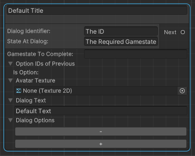
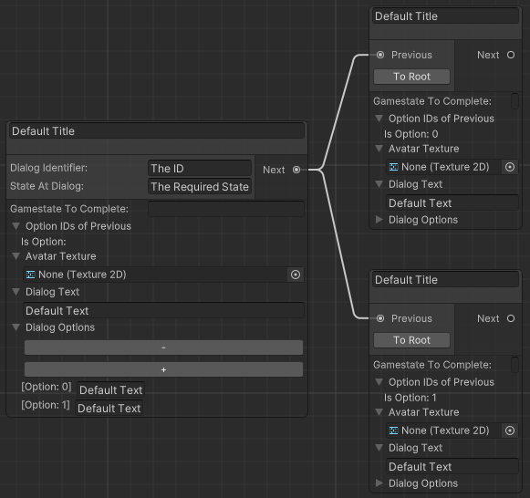

|
UnityToolbox
Brief documentation for all existing scripts.
|

|
|
UnityToolbox
Brief documentation for all existing scripts.
|
|
This feature adds a dialog node editor and scripts for their usage. The prerequisites for using this system are:
Like the other editor tools, the dialog graph can be found within the toolbar, under "UnityToolbox" -> "Dialog Graph":
| Dialog Graph Button |
|---|
When opening up the graph for the first time, one will be asked to input a directory. This directory must be within a "Resources" folder.
The directory is required for all data to be saved and included within the build.
When changing the directory via the "Directory Settings" button, data will be read from there and the view will be refreshed.
If the data within the old directory is required, one will need to manually copy the file to the new directory for it to be read.
| Dialog Graph Directory Setup |
|---|
There are now two nodes which can be used. The default node, which can be created with the right click drop down and the root node, which can be created by converting the default node with the "To Root" button.
The Root node only differs by the input parameters used. They are not called by another node, but by an ID and an optional gamestate.
An ID can be used for the later mentioned scripts, to refer to a specific dialog. Therefore they must be unique and will be automatically renamed otherwise.
The gamestate field defines, at which gamestate the dialog should be called. If left empty, the dialog will always be called.
Multiple equal IDs are allowed if they are in combination with different gamestates.
For detailed usage of the gamestate management, please refer to the Gamestate Management Tutorial page.
| Root Node |
|---|

|
The following fields are values used to be displayed within the UI. The only exception is the "Gamestate To Complete", which completes a given gamestate once the dialog node is called.
The "Avatar" is the texture used to display within the UI. This texture must also be stored within a "Resources" folder.
The "Dialog Text" is the description. The title is the first field found at the top of the node.
Lastly, the options are directly linked to the amount of next nodes. If only one next node is present, these fields are optional.
Multiple next nodes require a dialog option field for each node. These fields define the text for the choice buttons, which are displayed within the UI.
| Node Connections |
|---|

|
The localized nodes work similar to the default nodes, with the key difference that LocalizationIDs are used to define the text values.
| Localized Node |
|---|
For detailed usage of the localization tool, please refer to the Localization Management Tutorial page.
The first step, based on the Menu Setup, is to set up a canvas and register it as a Menu within the MenuManager.
Secondly, two scripts will be required. The DialogManager which manages all created data by the dialog graph
and the DisplayDialog script, which manages all UI related elements.
| DialogManager & DisplayDialog |
|---|

|
All values apart from the "Menu Type" and "Menu Of Type" selection are UI elements which are used within the dialog canvas. All values are optional.
The "Sprite To Show" is similar to the "Avatar" texture within the dialog graph, with the difference, that it is shown permanently and does not switch if the node changes.
For the dialog to be intractable, two scripts are to be used. The NextDialogButton, which is the button that is displayed if no options are registered for the node.
The button will always lead to the first next node and close the dialog if no node is found. An AudioMixer can optionally be added to play on click.
The other script is the NextDialogOptionButton, which also has an optional AudioMixer field and an additional field "Option ID" field.
This field refers to the "Is Option: x" value within the node and is required to display the correct option text and next node once clicked. It will also close the dialog menu if no next node is found.
For further details of the audio management, please refer to the Audio Management Tutorial page.